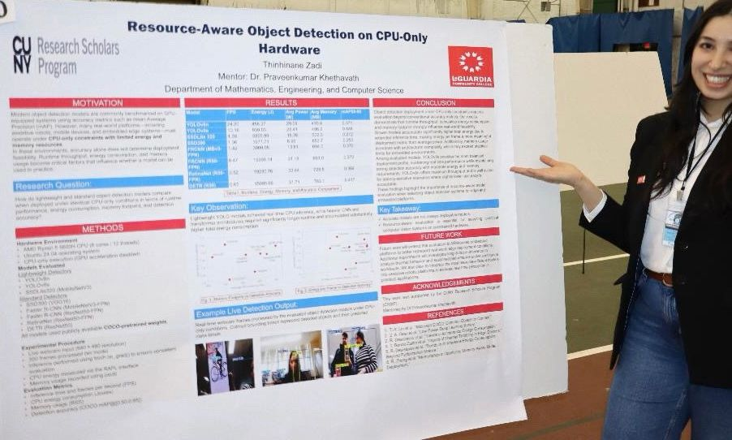

Research Overview
This research explores how different object detection models perform under CPU-only conditions, where hardware resources are limited. The goal is to understand which models are practical for real-world deployment, especially in edge computing, robotics, and assistive technology.
The project compares lightweight and heavier detection models, including YOLOv8, SSD, RetinaNet, Faster R-CNN, and DETR. Each model is evaluated based on runtime speed, memory usage, energy consumption, and detection performance.
Why This Matters
Many AI models perform well in controlled environments, but real devices often have limited power, memory, and processing capacity. This research focuses on the practical side of AI: not only whether a model is accurate, but whether it can run efficiently in real-world conditions.
Key Focus Areas
- Object Detection
- Computer Vision
- CPU-Only Inference
- Energy Efficiency
- Memory Usage
- Model Benchmarking
- YOLOv8
- PyTorch
- OpenCV
Research Poster
This poster summarizes the motivation, methodology, model comparison, results, and conclusions of the project.

Conclusion
The research shows that choosing an AI model is not only about accuracy. For deployment on limited hardware, speed, energy use, and memory footprint are just as important. Lightweight models such as YOLOv8 can offer a strong balance between performance and efficiency, making them useful for practical AI systems.